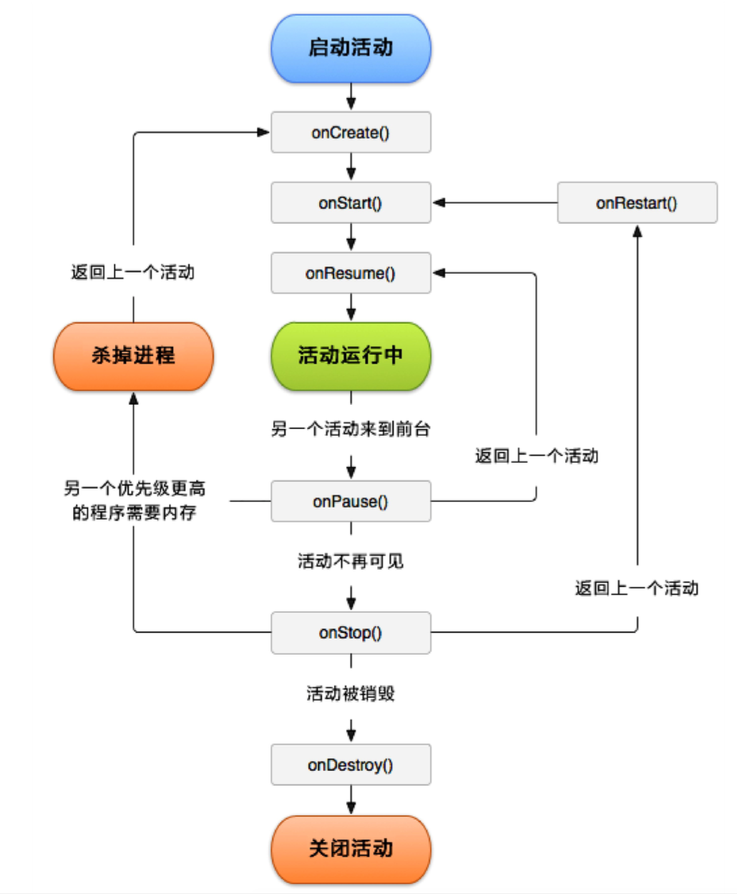

Acitivity 从创建到销毁，分别经历了 onCreate、onStart、onResume、onPause、onStop、onDestory等生命周期。

onCreate 第一次创建时调用，通常用于加载布局、控件初始化、事件绑定等。
onStart 表示活动视图展示给用户，可见不可操作。
onResume Activity处于栈顶，当前处于运行状态，活动可操作，可与用户交互活动。
onPause 此时活动可见但不可交互，可做一些持久化操作，如状态保存，停止动画等，不能做耗时操纵。
onStop 活动对用户不可见，如果内存紧张时系统会直接结束这个活动而不会触发该方法， 所以保存状态信息是应该在
onPause时做，而不是onStop时做。- onDestroy 活动销毁，如果内存紧张时系统会直接结束这个活动而不会触发该方法。
- onRestart 处于停止状态的活动需要再次展现给用户的时候触发，后台切到前台，如Home键返回。